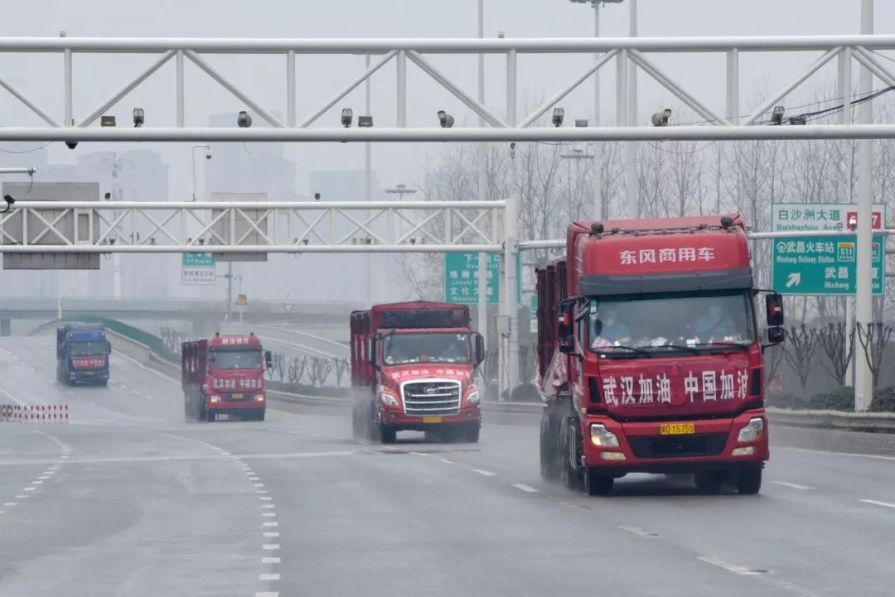
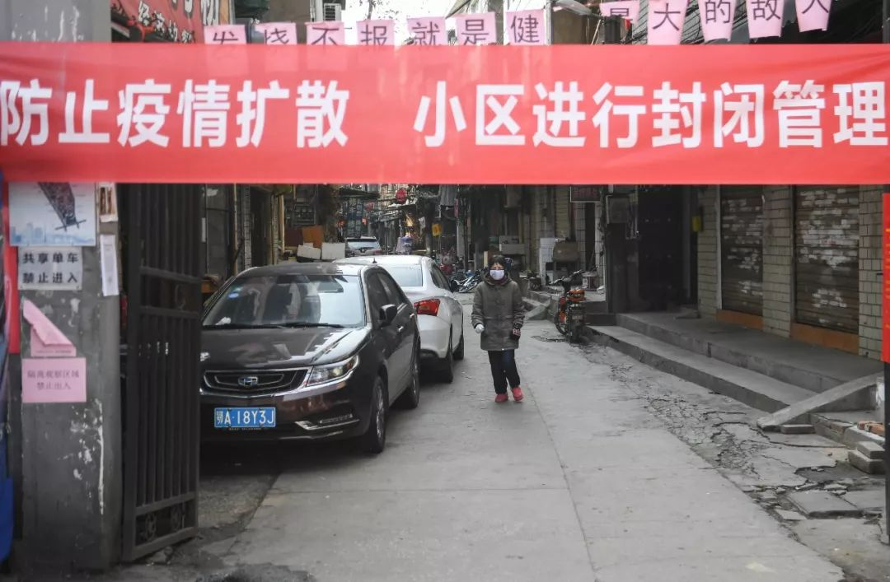
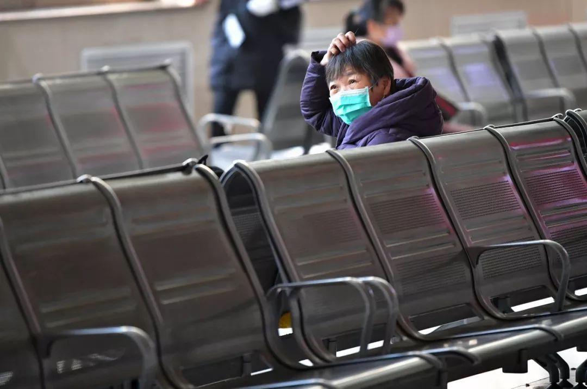
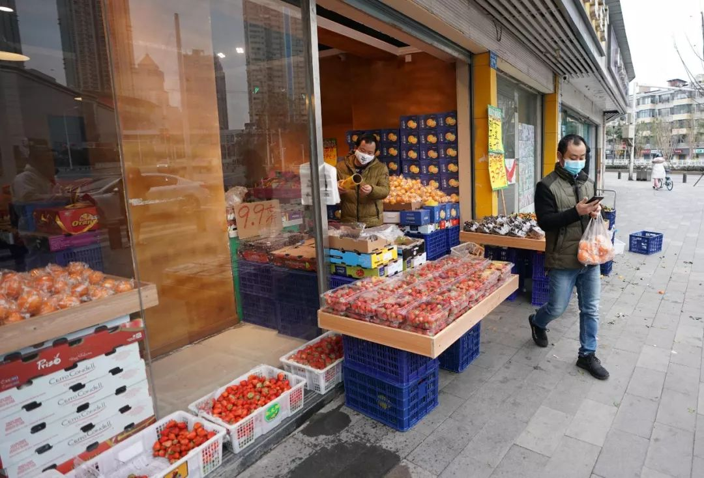
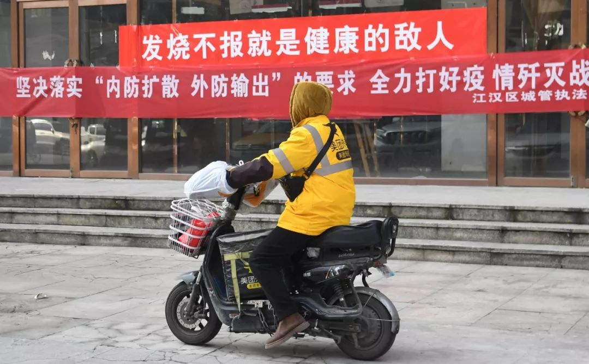
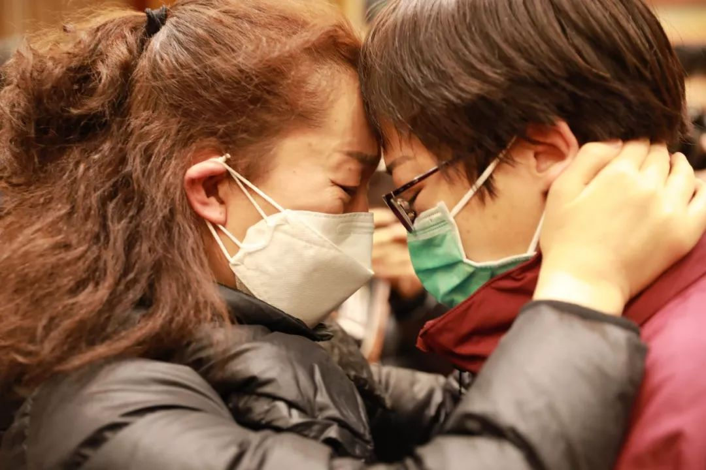

五个武汉人的封城日记｜故事FM
原文链接 备份链接 🎧 点击上方图片，跳转「故事FM」小程序，收听真人讲述。记得添加「我的小程序」，一键收听全部故事哟！ 本来在春节前的最后一期节目里，我预告说 故事FM 会放假一周，节后回来再见。 但是这个春节啊，我们团队都无心过年，大 …
有武汉人滞留在外地，就有外地人滞留在武汉。
1月23日凌晨，武汉宣布封城。
2月10日，湖北省以外的地区陆续开工，这让滞留在武汉的人更希望知道出城的日期。
恰值人口高峰流动期，没有数据统计滞留在武汉的人到底有多少。但各有各的原因，有人回家探亲，有人高速上走错了路，有人转机经停武汉，有人到武汉来看病，有人从英国过来看男朋友。
这场疫情，这次封城，改变了太多人一时的计划，也给他们带来了更多的思考。
我们听听两个滞留在武汉的人的故事，听听她们为了回家，走了哪些路。
以下来自她们的口述。上海的千千和江西的家家，她们说她们想早点回家。
我老公是武汉人，每年过年，我们都会回来。以前都是年前腊月廿七、廿八回武汉， 这次我们是1月22号中午回到。武汉宣布封城是1月23号凌晨。
我们回来之前，武汉已经说有疫情，我还蛮担心的，毕竟我的两个孩子，小的还在读幼儿园。我们打电话回来跟家里人确认，家里人给我们的反馈是说是造谣的，造谣者都被抓到派出所了，电视台也放这个新闻了。我们一听觉得没太大事，也就回来了。
主要是家里有两个老人，我们一年也就聚这么一次，我当时就想，实在不行，过了年三十就回上海吧。
看到武汉封城的信息，是1月23日上午九点半左右。我们22号中午到的，当晚吃饭到很晚，我呢，人也比较累，就睡了个懒觉。第二天打开手机一看，封城了。

特别害怕，很恐慌。怕回不去。
那天还有信息说加油站也关闭，我老公第一时间就是赶快去加油。因为车子没有油，就是可以走，也走不了啊。加油站那边，排了很长的队，应该很多人都跟我们一样的情况。所以说加油站关闭是谣言。这时候会有很多谣言，都不知道信哪个，不信哪个。
我们就想着，初一（1月25日）试试看，看能不能其他的途径走出去。
初一那天早晨，我们开车出去，开了100多公里，路全部都被封了，很多小路都被挖掘机挖掉了，就是那种一挖为二的挖掉，乡村的泥巴路也都挖断了。当时查手机说（湖北）咸宁那边还没有封，但是我们连武汉市都出不了。
顿时感到无助和伤心欲绝。
我是家里的独生女，我爸爸妈妈在上海。
我在这边，老公正带我和孩子到处找出城的路，找不着，上海我妈妈那边，不知道为什么突然之间脚疼，疼得没办法走路，而且那时候上海的疫情也闹得蛮凶了。已经开始严禁出门、戴口罩了。大年初一，医院也不一定能开门，我能怎么办呢？

我的情绪一下子就崩溃掉了。
我爸爸妈妈年纪大了，不会开车，住的地方到医院也有一定的路程，我求助小学时的同学。我同学帮我打听到，医院确实是不开门。后来我妈妈就是硬扛，疼得受不了，吃了一点止痛药。
吃了药以后，第二天自行恢复了，可以下地走了。她就第一时间跟我联系，安慰我说，没事了。其实也有可能她还在疼，她只是不想让我着急。
后来我们就每天中午一次、晚上一次视频电话。我妈妈就叫我安心一点，不要着急，她就说，等疫情稳定了，就能回来了。
确定自己回不去了，我主要就是担心孩子的学业和身体状况，还有公司的经营。
我在想，不能坐以待毙，先想办法自救啊。每天就打电话，网上搜索，关于疫情每天都有很多新闻，到处都是说武汉人滞留在外地，但也有很多外地人滞留在武汉呀。这些滞留在武汉的外地人怎么办呢？

在一架起飞的航班上，小孩正戴着口罩做作业（图/拾城 崔力）
我现在比较着急的，是我孩子的开学问题。我儿子今年正好是初三，毕业班。原则上是2月17日开学。我怕影响到他学习，先打武汉市长热线，再打上海市长热线。
武汉市长热线就说肯定是出不了城的，也没有相关文件。我就对他说，你把我们的情况反应一下吧。
上海市长热线，我上午打过去，下午就回复给我了。他们把我的问题反馈到了我们所在区的教委，教委就给我来电话。他们就说帮我们一起反馈，叫我不要给孩子压力，问孩子学习方面需不需要帮助，作业带了没有。然后学校和班主任也跟我联系了，当时是大年初二。老师发了一些初三下半学期要学的知识，让孩子先预习，现在又有网课，就说让孩子通过网课来提升自己。
我们自己经营一家实体加工厂。上海（2月10日）复工了，前两天有客户已经在跟我下订单了，急着要货。我们在这边回不去。工人也都是外地的，回到上海，肯定要自行隔离14天，我们没有办法复工。
公司的运作，肯定是越到后面，影响会越大。对做生意的人来说，要么是赚，要么就是亏。现在我们都处于停滞状态，那肯定是亏钱的，也不知道何时能运作。

我现在每天看新闻，看大数据。总的来说，与疫情有关的数据是在下降的，那么多的医疗队来武汉，我相信有一天肯定会控制得了的。肯定只要耐心等待，这个等待肯定是很漫长。我们在这个空间里不能出去，就更觉得漫长。
现在我也开始找一些娱乐措施，和一些滞留在武汉的人聊聊天，放放松。我不是滞留群体里最难的，毕竟我在武汉有吃有住还和家人在一起，有很多人食宿都有问题，他们有的就是当时经过武汉，有人就是过来武汉看病，但是一封城，都走不了。
通过一圈电话了解下来，有些人劝我说，现在你的事情在国家利益面前肯定是要先放一放的。现在控制疫情是最大的事情，不能说你自己去想怎么样就怎么样。
希望疫情早日过去，国家强大稳定，我们老百姓才能有幸福的生活。
我是1月22晚上9点多从西安抵达武汉，计划23号11点左右从武汉到赣州，我带着我女儿，我们是从武汉转机。
机票，我们是提前就定好了的，出发前也看到说武汉有疫情，但是也有辟谣，我心想，不就是转个机就走嘛，又不停留。
我经历过非典，当时有点严格，但没有封城。
那晚下飞机后，我们就在武汉机场附近的酒店住了下来。第二天一早，酒店老板就对我说，你可能走不了了，武汉宣布封城了。我当时就傻了。突然之间宣布封城，之前没有任何提示，我们22号那晚在飞机场，也没有看到工作人员戴口罩，或者是提醒我们要变更行程什么的。

一觉醒来，就是封城的消息，我们措手不及。
我赶紧联系我们那趟航班，就说已经取消了。
当时就很害怕，六神无主，在这个陌生的城市里，无依无靠，又是春节，而且还“人传人”。真的是太难受了。
机场酒店费用有点贵，每晚要200多块钱，我是单亲妈妈，最近还辞职了。就是因为辞职，我让女儿从赣州到西安，我们一起玩一玩，然后就准备赣州老家了，才被滞留在这里的。
一看走不了，我想不能就这样消费，得找便宜一点的酒店，得控制所有的成本。
他们说武昌区的酒店价格没有那么贵，一晚上100块钱吧。我们就找了一辆出租车，从机场到武昌区，出租车的价格也是一下子就涨了，150元起价，不打表。我们找了一家小旅馆，很多大的酒店要么太贵，要么不营业。
我就问旅馆老板，能不能稍微优惠一点，他说不能。现在每天吃饭靠吃外卖。菜品很少，尤其是绿叶菜，都不方便，很多菜都进不来，这些都可以理解的。

2月8日，武汉一位顾客从店里买完水果后离开
比起有滞留在这里的人，只能住停车场，连手机充电都充不了，我们母女俩也算是好多了。
我女儿今年读高一，也不知道这封城会不会影响到她的学习，现在也都是在上网课。
但是我们被困得生活都过不下去了。我担心会给她带来不好的影响，但转念想，她小小年纪遇到这种事情，也是一个磨炼吧。
我们住的小旅馆附近的药店买不到口罩，幸亏我们从西安过来时，包里有防雾霾的口罩，有时候实在要外出了，就应应急。但严格来说，它跟隔离冠状病毒的口罩是两回事，但是我们只有它们。酒精、消毒液、手套，我也没有买到。我俩带的衣服不多，日常更换都有问题。
爸妈知道我被封住的时候，他们比我还慌，我也只能安慰他们。我就说，我们很好，就是被困在这里了，让他们放心。父母年龄大了，不能让他们太担心，孩子呢，我也不能给她太多压力。就是上有老，下有小，想哭，连个哭的地方都没有。
所以，我就说我只能自己寻求政府部门的解决方案。
我找了民政部门、旅游局，找了交警、社区，也打了市长热线和防疫指挥部，都没有用。其实被困在这里的人，每个人都走过这么一个流程。我打防疫指挥部的电话，对方说，你知道我们防疫指挥部是干什么工作的吗？社区的人就说，我们也管不了啊，我们也是第一次遇到这种情况啊，我们是基层人员，就是按文件、按政策办事啊。

有时，我就在想，那些滞留在外地的武汉人，武汉政府帮助他们回武汉，我们江西政府，对滞留当地的武汉人也有一个很好的接待。但是我们来自五湖四海，因为封城这件事凑巧被滞留在这里的人，遇到了什么呢？
我在这里快20天了，每一天都很煎熬。
从我找到酒店安顿下来那天起，我就一直在找政府各个部门，一圈下来以后，我就很绝望，觉得好像武汉没人管我们这种外地滞留人。
我也是在找部门、碰壁的过程中，才知道原来有很多人都因为这样那样的巧合被滞留在了这里。然后大家就组了个群，互相之间给予信心，抱团取暖，这是我在这些天里唯一感到有希望、温暖的地方。
我们每个人似乎都走遍了自己能走的流程，结果都是心力交瘁，其实他们本可以协调好这个问题，而不是把我们踢来踢去。

图/拾城 武晓慧
现在到了复工、开学的时间，大家就更焦虑。
封城，至少我是可以理解的，因为要照顾公共利益。但是政府应该有预案，比如说提醒外省人不要通过机场、高速路等经过武汉。
如果真的时间紧迫，来不及做这样的提醒，但是针对这样的人群，是不是应该也有一个预案呢？比如针对滞留在外地的武汉人会有后来的举措，但是对滞留在武汉的外地人，怎么就没有呢？
这样的人口强流动时期，政府人员应该知道有很多滞留在这里的，一定是知道的。但是也没有任何消息，就算我们去向他们反映，他们还是说他们不知道，让我们自己解决。而我们完全就是求助无门。
而且关于可以出城的时间，一直有不同的说法，到了一个时间说不行，要延期，再到一个时间，再延期。定了一个时间，我们就满怀着希望就等那一天。现在他们的预案定在了2月14号。
我和孩子两个人，这段时间经常失眠，她就躺在床上问怎么办呀。我要给她信心，就说这种情况让你成长，我就说，人生当中会有很多很多预料不到的事情。

现在不能出门，我们温馨和娱乐的时刻，就是给她讲她小时候的故事，我们两个人再回忆共同经历的一些事情。她没有经历过非典，我就给她讲非典时的事情。就是给她一些精神上的东西，让她不要紧张，不要害怕。
给政府部门打电话，有时也得必须本人过去一趟说明情况，比如要去社区。这是我在这里仅有的外出，也尽量错开人多的时间段。但就算是那样，也能看到路上有人不戴口罩，也有人随地吐痰，我是真害怕。
我有一次还去了省政府，大年初十那天，星期一。打了一圈电话以后，我想省政府话是（权力）最大的机构，而且他们的电话也查不到，我就去了一趟。从我住的地方到那里走路半个小时。
我去了以后，在门卫处，有工作人员出来，他们没听我的诉求，直接就劝返。我的想法是，他们可能不会解决，但是应该记录，记录以后上报，让有决策能力的人知道有我们这么一个群体，知道我们遇到的困题。
但是这些都没有，直接让我回去。
回来的路上，感觉很受挫，有点崩溃，我是满怀着希望去的。结果是这样。我也不敢跟孩子说，就说我们再看看别的地方吧。
但是我又去不了别的地方。

图/陈莉莉
我总是想哭，但在我们租的小房子里，女儿又在，不能当着她的面哭。我就告诉她，现在只能尽我们所能地做好防护。多洗手、勤洗手。
我现在特别想回家，回到家，好好地拥抱我的父母。
有人说像我们这种滞留在武汉的有30万人左右，这个数据不好统计。谁也不知道到底有多少人。
应该快好了吧，这座城市应该快解封了吧。
希望所有人都平平安安的。
原文链接 备份链接 🎧 点击上方图片，跳转「故事FM」小程序，收听真人讲述。记得添加「我的小程序」，一键收听全部故事哟！ 本来在春节前的最后一期节目里，我预告说 故事FM 会放假一周，节后回来再见。 但是这个春节啊，我们团队都无心过年，大 …
原文链接 备份链接 _ _ _ _ 导语: 武汉疫情发生后，牵动人心。它是中国自SARS以来最严重的公共卫生事件，也是我们这代人不可遗忘的记忆。疫情期间，微思客将开启“疫情”专题，诚邀各位专家及读者来稿，我们会定期更新优质稿件，这些记录都 …
原文链接 备份链接 以下文章来源于世风 ，作者吕晓宇 【疫情之下】是苍衣社开设的非虚构故事专栏，记录在新型冠状病毒疫情蔓延时，普通中国人的抗疫报告。 大家好，我是脸叔。 随着新冠肺炎的爆发，湖北地区的居民工作和生活都受到很大的影响。 …
原文链接 备份链接 编者荐语： 马子本来计划春节出游，结果回来过个年，就因疫情封城动弹不得了。我俩见个面都难。天门疫情确实严峻，希望大家能多给予关注。瘟疫面前，命无贵贱，人人平等。 © 图文 阅路山 2020年2月4日 立春 武汉封城的 …
原文链接 备份链接 昨天是春节假期后返工第一天，但因为新冠肺炎的影响，注定了是一个不一样的开工日。每日人物询问了10个不同行业已经开工的人，他们正在做的工作，和我们的生活息息相关，记录他们的生活和烦恼，也是记录这次疫情所影响的不同侧面。 …